Beauty market segment is valued at $26.8 billion right now and it is projected to grow to $38 billion by 2025. Moreover, beauty is going digital and more than 80% of consumers reported that they prefer to make purchases based on recommendations of key opinion leaders.
Beauty surpasses boundaries of thoughts, societal norms, hierarchy, etc. and appeal beholding eyes. Beauty can be ascribed from fraction to wholesome elements that we see every day and it is rightly said, To nourish beauty is a divine act in itself.
Netizens are largely attracted to beautiful things and left in awe when they discover something eye soothing. Social media platforms are marvelous places to showcase hidden beauties of individual appearance, clothing ingenuity, makeup methods, cosmetics magic, etc. Key opinion leader creates content on beauty and stages it on YouTube platform for fellow subscribers.
Top beauty content creators on YouTube are known as Beauty Youtubers. They present content related to beauty niche and adjunct elements.
Over the past five years, creator marketing has expanded tremendously, opening new options for brands of all sizes. The market for creators was estimated to be worth $6.5 billion globally in 2019, grew to $16.4 billion in 2022 and is expected to rise to $27.4 billion by the end of 2026.
Creator marketing has exploded owing to factors like increased use of social media platforms, common mobile usage, the trend of short video content as over 95% of people tend to absorb a message better with short videos thus giving more ROI than only 10% retaining it while reading as per popvideo, as more and more organizations realize they need to reach customers more effectively. It is one of the three major forces of marketing right now, the other two being social commerce and user-generated content with over 30% millennials spending all of their time on user generated content as per Businesswire.
Who are Beauty YouTubers?
Contents
- 1. Who are Beauty YouTubers?
- 2. Top 20 Beauty YouTubers In India
- 2.1 Shruti Arjun Anand
- 2.2 Smitha Deepak
- 2.3 Kaushal
- 2.4 Megha Bahuguna
- 2.5 Mrunu Panchal
- 2.6 Ankita Chaturvedi
- 2.7 Kritika Khurana
- 2.8 Malvika Satlani
- 2.9 Shreya Jain
- 2.10 Roshni Bhatia
- 2.11 Shivangi Sharma
- 2.12 ShivShakti Sachdev
- 2.13 Chetali Chadha
- 2.14 Debasree Banerjee
- 2.15 Anindita Chakravarty
- 2.16 Faby_makeupartist
- 2.17 Aashna Shroff
- 2.18 SUSH Dazzles
- 2.19 Aishwarya Kaushal
- 2.20 Raji Osahn
- 3. To Sum Up
Beauty Youtubers are beauty domain experts who have great and deeper command on beauty consciousness, products, trends, etc. YouTube being their major platform to showcase their artistry. They create videos, tutorials, How-tos, explainer videos, etc to acknowledge subscribers about various facets of beauty YouTubing.
Beauty YouTubers provide a collective and holistic view of the beauty landscape. Some of them have an edge of a few sub domains. The skill sets beauty YouTubers hold primary responsibility to elevate mass social beauty cognition. Customers associate with social proof and subjective validation in order to raise their status in consonance.
Types of Beauty YouTube Channels:-
- Skin Care Beauty YouTubers: As the saying goes, first impressions hold great value. Skin is the primary visual attribute that an individual notices. Taking care of skin is crucial to appear sharp and striking. Skin care beauty YouTubers create videos to take care of skin.
- Under Budgetary Cosmetics: Cosmetic products are potent ways to nourish physical elements like face, eys, hairs, etc. These beauty YouTubers talk and acknowledge various products, their benefits, and prices.
- Makeup Tutorials Beauty YouTubers: These beauty Youtubers help their subscribers to learn the nuances of makeup. The feat of makeup beauty YouTubers has made it efficient and effective for the subscribers.
- Haircare Beauty YouTubers: Hair is very important when it comes to overall appearance. Everyone loves to have silky flowing hair but to have that is not an easy task. These beauty Youtubers suggest various methods natural and artificial to take care of hairs.
Moving forward, we understand the ingenuity of beauty Youtubers and video potential on social media platforms. It can directly benefit brands in various ways. Repurposing of content, Domain specific videos, explainers, etc are infallible methods of branding which are done through creator marketing.
What if you could leverage all of the three elements and churn out the perfect campaign for your brand with the ideal creator in your niche, script, monitoring, and professional recording in just a click? Yes, you can now with the help of Vidzy – the best video production agency in India, which is powered by Grynow the top creator marketing platform having a team of professionals with over 6 years of experience in the exact area. From social media posts, and video ads to product reviews you can have all the content to post and increase your brand authority.
One of the most popular niches of creators right now is beauty, let us look at the top 20 beauty YouTube channels in India which you can leverage as well for your marketing strategy with the help of Vidzy:
Top 20 Beauty YouTubers In India
-
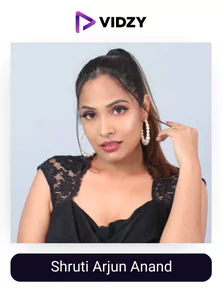
Shruti Arjun Anand
YouTube: Shruti Arjun Anand
USP:
One of the top beauty creators owing to her screen presence and knowledge.
One of the top makeup creators or beauty creators on YouTube is Shruti Anand. She has posted a few tutorials on how to apply makeup. Attending a wedding but stressing out about your makeup? Are you a complete newbie when it comes to makeup? Take a look at her “Makeup for Beginners” video! Not able to achieve the ideal wing eyeliner look? Through her detailed instructions, Shruti makes things simple.
Are you sick and tired of having zits on your face? Check out her trick for treating pimples overnight. Have you developed a tan from your trip to the beach? Want to make your dark lips lighter? What is a home facial procedure? In her digital salon, you can get answers to all these questions and more!
Mama Earth, Smashbox, Huda Beauty, Mary Kay, Anastasia, WOW Skin Science, Body Cupid, NYX Professional Makeup, PAC, Maybelline, and EUROPE GIRL are some of the brands that Shruti uses in her videos.
Over 4% of Shruti’s followers engage with her, and she has nearly 9 million subscribers on YouTube. 1.6 billion people have watched her videos overall! You may find the answer to any cosmetic, skin, or hair care query on this gorgeous makeup artist’s YouTube channel!
-
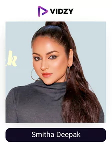
Smitha Deepak
YouTube: Smitha Deepak
USP:
Her knowledge of beauty and content creation skills are ideal for the audience who are looking to learn all about the niche.
Smitha is a San Francisco-based Indian beauty vlogger who can replicate any look, particularly Bollywood-inspired ones.
Smitha Deepak is a beauty blogger and makeup artist who specializes in recreating Bollywood looks. She has a devoted following because of her excellent beauty advice and hairstyles; if you randomly watch one of her beauty vlogs, you’ll realize why.
In 2016 she made her YouTube debut with the “Soft Romantic Makeup” tutorial. With over 13.5 million views, her most popular upload is “How to Remove Facial Hair | 100% Natural Home Remedy.” Her carefully planned feed and her mission to add something valuable to whatever she puts out is what separates her from the competition. It lets her have a great engagement rate or videos filled with likes and comments of adoration.
She has a multifaceted career and a successful entrepreneurial life because of her strong professional desire. She currently serves as the founder and CEO of The Green Creation, Inc., a certified organic children’s clothing company, hosts WomenNow TV, “America’s First South Asian TV Talk Show,” and models and serves as a brand ambassador for the Northern California Cricket Association and various South Asian clothing companies. Smitha is most proud to be a wife and mother of two children apart from being a beauty vlogger as well.
-
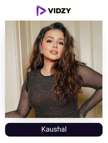
Kaushal
YouTube: Kaushal
USP:
She has amazing knowledge and personality which makes her videos amazing to watch and learn.
Kaushal started vlogging to combat the boredom that frequently afflicts teens during her college time. However, she was quite erratic about it, and most days there were no entries to her blog. When she graduated, she eventually landed a job with a fashion PR firm, but she quickly discovered that it was extremely stressful and that she would come home every night exhausted. Finally, her fiancé had to step in, and the two of them came up with a list of potential substitute professions before settling on starting a YouTube channel. What follows is history.
She currently has more than 2 million YouTube subscribers and is well-known for her cosmetic lessons. Every outfit she wears is flawless, and she has created many tutorials that are appropriate for any situation.
Everything about her eye makeup application, including the excellent swatch videos, is flawless. ‘Kylie Jenner Inspired Make-Up Look,’ which has had more than 10 million views, and ‘Tutorial on Foundation Contour & Highlight Routine,’ (more than 3 million views) are two of her greatest videos. She has the best Indian YouTube channel for cosmetic instructions, and we adore her on screen.
Her consistency in providing content on topics that are essential for the audience or which helps a great deal is what is getting her an insane amount of engagement rate and a total viewership of over 265 crores. Make sure you follow one of the best beauty channels on YouTube.
-
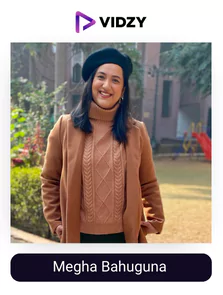
Megha Bahuguna
YouTube: PerkymegsHindi
USP:
She has all the topics covered on beauty that you are curious to learn about.
Megha has two YouTube channels, “Perkymegs Hindi” and “Perkymegs (English),” both of which have 1.44 million subscribers, respectively. Being creative, she created Perkymegs Hindi to weekly upload beauty and fashion videos because she didn’t love her humdrum work life. Megha posts films nowadays that her admirers eagerly absorb, including those about fashion trends, beauty looks, and “hauls” videos. With a 4% engagement rate, she is one of the greatest Indian makeup artists on YouTube and discusses inexpensive fashion and beauty.
Want to use Priyanka Chopra’s engagement outfit or Jennifer Winget’s appearance from her TV show? Perhaps a supporter of Deepika Padukone? Megha reveals the inside scoop on how to get those looks! How can the smokey eye look so perfect? Attend a wedding without having too much makeup on? Megha is your Aladin’s Genie.
For styling her many looks, this beauty YouTuber uses a wide variety of products, including Faces, KVD Beauty, NYX Professional Makeup, Colourpop, Pac Cosmetics, MAC, Milani, Maybelline, Laura Mercier, and Morphe Jaclyn Hill.
Megha explains each procedure, each product, and the brand she uses to create the look in her fascinating and educational lessons. Visit one of the most subscribed beauty YouTube channel in India, if you want some unusual beauty advice!
-
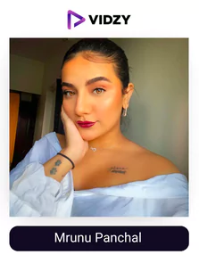
Mrunu Panchal
YouTube: Gujju Unicron
USP:
She has perfection in whatever she does, be it makeup tutorials or tips and tricks owing to her knowledge and experience.
Mrunal started the “Gujju Unicorn” YouTube channel in 2018 and it currently has 822k subscribers. On this channel, the Indian beauty vlogger shares her skincare, cosmetics, and vlog routines.
If you need a brief, concise tutorial, Mrunal’s under-30s videos are excellent. Do you ever wonder why some people have the ideal messy bun while others are messy (not in a good way)? Having trouble braiding your hair? Looking for a simple tutorial on graphic liners? Do you believe there are a few methods to style short hair? For some major inspiration, visit her virtual beauty salon! Additionally, Mrunal has posted product reviews and used popular beauty tips.
With a 6.5% engagement rate and more than 192 million cumulative views, this beauty creator has attracted the attention of several brands, including L’Oréal Paris (ER – 54.50%), Maven Beauty (ER – 62.50%), Secret Alchemist (ER – 137.30%), Too Faced Cosmetics (ER – 50.85%), Lakmé (ER – 41%), Bombay Shaving Company (ER – 48.70%), Daniel Wellington (ER – 58%) etc.
In 2024, 51% of brands intend to increase their social commerce spending as per shopify due to the amazing or impactful results it provides, if you want to leverage it too this would be one of the ideal creators to collaborate with the help of Vidzy.
-
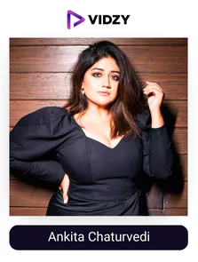
Ankita Chaturvedi
YouTube: Ankita Chaturvedi
USP:
Her experience and knowledge can make you a pro in the beauty field.
Ankita is one of the most trained makeup creators on YouTube, a content creator, and a beauty creator. Her WordPress blog, Corallista, which she started as an alumna of the Indian Institute of Technology in Bombay, gained in popularity, and turned into a full-time job. She also holds a as a makeup artist from the Paris-based Makeup Forever Academy.
She primarily produces videos for health and beauty right now. She has collaborated with various domestic and foreign beauty companies. Millions of people watched Ankita’s videos on YouTube and Instagram. This Indian beauty creator has a variety of makeup looks to offer her followers, including both western and Indian party makeup looks.
She is the favorite of many beauty brands because her YouTube account receives hundreds of comments, likes, and subscribers every day. She will inform you of all the benefits and drawbacks of every beauty brand, both domestic and international, so you can choose the correct item to purchase with your hard-earned money.
Her ongoing desire to foster a varied and inclusive beauty community has been the cornerstone of her company from its inception in 2011. Ankita has built out a fascinating niche for herself over the years with her intensely focused beauty videos, personal approach to skincare and cosmetics, and thoughtful approach to brown-skinned beauty. Her bridal seminars and series are the most well-liked among South Asian women, and they frequently receive views and impressions.
-
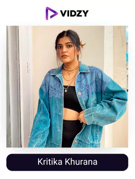
Kritika Khurana
YouTube: Kritika Khurana
USP:
She knows how to make each element of makeup or beauty easy for you to understand and learn.
Indian YouTube makeup creator Kritika Khurana, commonly known as “That Boho Girl,” is well-known. She has a sizable fan base on Instagram and YouTube. Her YouTube account includes “Get ready with me” videos, daily life vlogs, vacation vlogs, and product reviews. Kritika is a well-known lifestyle creator who also runs a beauty YouTube channel and has verified Instagram and YouTube channels.
“I’ve always loved dressing up. I began by regularly uploading “ootd” (outfit of the day) photos on Instagram. As my following grew gradually, I made the decision to start my own website. Since that time, looking back is impossible.” – Kritika Khurana
Today she has a following of 803k and a rising engagement rate with her highest-watched video having more than 8.7 million views titled “what girls want”. Her friendly personality and passion for content creation in the beauty field is what helps her stay consistent, creative, and above the competition. If you are inclined towards the beauty arena, subscribing to her channel will be ideal!
-
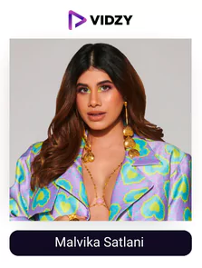
Malvika Satlani
YouTube: Malvika Satlani
USP:
A versatile beauty YouTuber who is consistent in teaching her audience all about beauty.
Malvika is an Indian beauty vlogger who is well-known for her straightforward makeup looks that she creates with budget-friendly domestic and foreign cosmetics. You should employ her influence if you’re interested in nude cosmetics. Her followers can’t possibly miss any of her videos since in addition to talking about beauty and skincare, she also addresses issues that affect real-life women including determining the right lingerie size, dispelling myths about periods, and much more. Her positive outlook and true personality draw others to her.
Malvika has a great engagement rate and approximately 792k subscribers. She releases videos on fashion, style, and vlogs as well as her own. Her most watched YouTube video to date, “My Wedding Makeup!” has had over 2.9 million views. She has collaborated with many other cosmetics firms in addition to supporting brands like Smashbox and NYKAA. And has appeared in movies like meri pyaari Bindu.
In addition to writing on beauty, she also produces travel-related programs. She attracts millions of visitors from all across the nation to her beauty advice and artistic abilities. Malvika previously appeared on the cover of the March 2015 issue of Femina magazine. She is also a co-founder of the cosmetic line Masic Cosmetics.
-
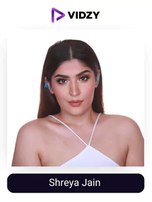
Shreya Jain
YouTube: Shreya Jain
USP:
Her consistency and quality of videos are all that you need to learn about beauty.
Without a question, Shreya Jain is one of the most well-liked and has one of the most subscribed beauty YouTube channel in India. She has continued to astonish her followers every week with cutting-edge beauty and cosmetic products since 2010. She uploads videos on her channel about DIY projects, fashion, and cosmetics.
Shreya produces articles about skincare, haircare, and cosmetics. She has tested nearly every beauty product brand for her job, including lipstick, kajal, eyeliner, eye shadow, blush, and highlighter. She is an Indian fashion stylist, blogger, and lifestyle creator in addition to being a YouTuber. You’ll have many reasons to watch her videos over and over again thanks to her sweet disposition and smooth recommendations.
She likes to create “Top 5” comparison movies, such “Top 5 Shower Gels For Summer Under $500.” She did such a fantastic job of analysing everything, from major brands like MAC and Huda Beauty to Indian cosmetic companies, that viewers could understand every little nuance of the products. You should watch her beauty videos if you haven’t previously because she has collaborated with a range of companies.
This Indian YouTuber for beauty also runs a blog called Beauty in the Third World. Make sure you check her content out!
-
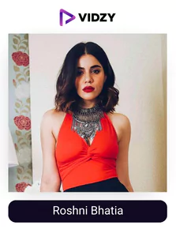
Roshni Bhatia
YouTube: Roshni Bhatia
USP:
She gives you a step-by-step video to learn all about beauty easily.
Roshni radiates elegance, and her makeup is flawless every time. She is stylish, and anyone desiring to replicate her look will benefit from her cosmetic tips. We frequently overlook the fact that our skin also needs good care at night! We are all reminded to let our skin breathe by watching her skincare video on the evening skincare routine. She has posted videos on several topics, including how to achieve the classic red lipstick look, skincare advice, a step-by-step cosmetic instruction, and getting the smokey eye effect.
Roshni’s popularity with her audience and engagement rate of over 4.5% has led to a number of brand collaborations, including Braun Beauty India (ER – 20%), L’Oréal Professional Paris, Lakmé (ER – 28%), Kama Ayurveda, RAS Luxury Oils, Amrutam (ER – 29.40%), organized a UNIQLO INDIA giveaway (ER – 67.50%), Label Sanya Gulati (ER – 7.30%), etc
For advice and inspiration on makeup, beauty, and lifestyle, keep watching the 592K-subscriber, over 26 million views channel of this Indian beauty vlogger!
-
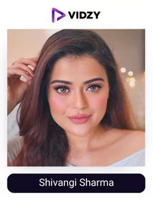
Shivangi Sharma
YouTube: Shivangi Sharma
USP:
She can be the fun teacher of yours who will make the subject easy and entertaining to understand and implement.
Actor Shivangi Sharma vlogs about fashion and beauty. The Indian beauty vlogger or YouTuber who specializes in makeup has all the standard components of a beauty vlog, including instructional and product reviews.
She developed her business, House of Shaarom, because of her success in content development. T-shirts, sweatshirts, her “Love and Light” collection, and upscale boutique candles are just a few of the many items it sells. This candle’s 100% vegan and non-toxic wax makes it environmentally friendly.
She has a following of 672k and a rising engagement rate owing to the impactful topics she chooses to teach and the way she teaches them. It makes the audience have fun in learning something which can be complex if the teacher isn’t right. Follow her for the best beauty content!
-
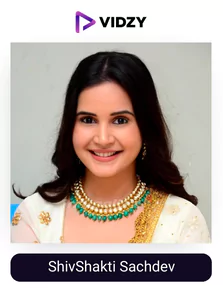
ShivShakti Sachdev
YouTube: ShivShakti Sachdev
USP:
She makes her content as per what the audience wants making her videos amazingly relevant and impactful.
Model, YouTuber, social media creator and Indian actor Shivshakti Sachdev primarily appears in Hindi-language television productions for her part as “Mehak” in the television series “Bhabhi,” Shivshakti is most known. The YouTube channel of Shiv Shakti Sachdev is full of vacation vlogs, shopping hauls, cosmetic lessons, and fashion and beauty hacks.
Her attractiveness draws the audience’s heart and soul, and it is complemented by a charming character. She is still working hard to meet her performance goals despite having done so much in her career at such a young age.
She has a subscriber base of 504k and a rising engagement rate owing to the trending and in demand topics, she brings after hearing what the audience wants to learn. This makes her channel a one stood destination for her audience as they get all their doubts and topics solved and understood respectively. This leads to a great ton of engagement on all of her videos with her highest watched video getting over 1.6 million views! Check out the content of one of the most famous Indian beauty YouTubers.
-
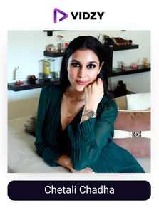
Chetali Chadha
YouTube: Chetali Chadha
USP:
Each of her videos are explained in depth to make it a great experience for the audience.
Chetali is an expert when it comes to beauty and fashion because she formerly worked at Myntra. To launch her YouTube channel, which has nearly 504k subscribers today, she resigned from her job. Her hauls and makeup lessons are instructive and current. Since not everyone wants to spend a lot of money, she mentions affordable goods in her videos.
Chetali has highlighted the best sunscreens on the market and how to reapply it over makeup now that summer has here. We are all aware that taking off our makeup each night to allow our skin to breathe is a crucial step in the skincare process. This YouTube makeup artist recommends a few makeup removers, washing oils, balms, and other products that she has discovered to be effective.
With combined viewership of over 75 million and an engagement rate of over 5.50%, it’s no surprise that multiple marketers have approached her including HouseofParita (ER – 37.50%), Too Faced Cosmetics (ER – 41%), Pure by Priyanka (ER – 41%), Braun Beauty India (ER – 750%), Huda Beauty (ER – 25.50%), Kay Beauty by Katrina (ER – 4.20%), Smashbox Cosmetics India (ER – 4%), The Face Shop India, moha (ER – 36.70%), and Maybelline India etc
Videos about skincare, haircare, beauty, lifestyle, and makeup can be found in abundance on Chetali’s account. Make sure you check it out as she is one of the best beauty YouTubers in India.
-
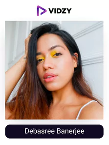
Debasree Banerjee
YouTube: Debasree Banerjee
USP:
Her experience in the field has enabled her to provide you with the best tips and tricks in beauty.
Debasree is well recognized for her comparison and review videos, which allow viewers to compare and contrast the quality, price, and other elements of several comparable skincare and beauty products.
She was inspired to start her channel in 2008 after watching YouTube videos. She has created original content for her channel, including her “unspoken beauty” playlist, try-on haul videos, honest product reviews, and solutions to all of her audience’s skincare problems.
The founder of the beauty company @debasreeebeauty is an Indian beauty creator with a 300K Instagram following and a 270K YouTube following who loves makeup and knows how to create strong wearable looks. Since she was a college student, Debasree has been blogging. The name of her beauty blog is “All She Needs.” make sure you check out the content of one of the top 20 beauty YouTubers in India.
-
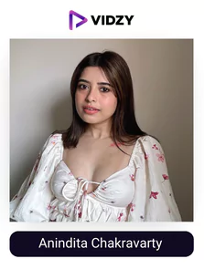
Anindita Chakravarty
YouTube: Anindita Chakravarty
USP:
She has got you covered in terms of beauty or makeup no matter what the situation is.
Anindita is one of the most skilled makeup creators who created her YouTube channel to connect with other like-minded individuals and share her passion for cosmetics. 256k people subscribe to her channel today, and her videos have received 52.6 million cumulative views!
Going on a date? This Indian cosmetic artist has amassed enormous popularity by posting tutorials, inexpensive makeup, skincare regimens, and hauls. Watch the brief video of her “Romantic Makeup Look.” Do you plan to get married? You don’t have to worry about it because Anindita has a “Bridal Kit Recommendation”! Looking to keep your makeup basic this year? Watch the video of her “Dewy Nude Pink Makeup Tutorial.” Her “10 Skincare Habits” video is jam-packed with tips and knowledge!
We admire this beauty creator’s commitment to educating the public about her personal experiences and expertise. Numerous brands have partnered with her thanks to her high engagement rate of almost 19%. She has organized giveaways with Cuffs N Lashes (ER – 17.50%), Revolution Makeup (ER – 17.60%), mCaffeine (ER – 19.80%), Smashbox Cosmetics India (ER – 21.20%), Bath & Body Works India (ER – 24.50%), BEAUTYBARLOUNGE (ER – 24%), Kuvar Jewels (ER
Check out this Indian makeup artist right away on YouTube if you enjoy experimenting with fresh makeup looks.
-
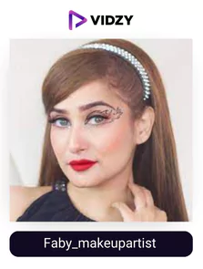
Faby Makeupartist
YouTube: faby_makeupartist
USP:
She is a master in making relevant and easy to understand content.
Indian makeup creator Fiza Abdi is highly recognized for her work on videos that cover a variety of subjects, including makeup, cosmetics, makeovers, hairstyles, and eye makeup. Because of her striking looks, impeccable sense of style, and outgoing personality, Fiza has been chosen over the years to represent prominent fashion and lifestyle businesses. Due to her ability to inspire others to follow their passions, she has a devoted following on Instagram, Snapchat, TikTok, and YouTube.
Over 222K people have subscribed to Fiza as she consistently publishes new content for viewers, and her engagement rate is 1.5%. Among the subjects Fiza frequently posts about are makeovers, skin care routines, nail arts, and beauty instructions. She is passionate about exercise and stresses the importance of leading a healthy lifestyle. She exercises frequently and practices yoga as well in her free time to keep her natural glow and preaches the same. Make sure you check out the content of one of the top makeup YouTube channels in India!
-
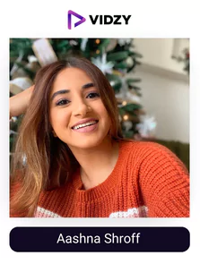
Aashna Shroff
YouTube: Aashna Shroff
USP:
A fun-loving personality teaching everything about beauty.
Aashna Shroff, one of the most prominent Indian beauty vloggers, is the epitome of beauty with brains. She is the creator of the beauty website “The Snob Journal,” and she enjoys trying new things and going above and beyond.
Her beauty vlog is full of original content that inspires viewers to experiment with new looks and remodel their wardrobes. She has also collaborated with well-known cosmetics companies including Nykaa, L’Oreal, Body Shop, and others. Aashna is among the top Indian beauty creators in India due to her entire demeanour.
-
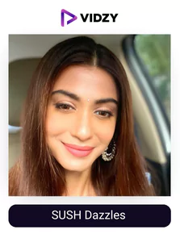
SUSH Dazzles
YouTube: SUSH dazzles
USP:
She will make learning all about beauty entertaining for you.
Sushmita has just entered the community of Indian beauty vloggers but her YouTube videos quickly gained popularity. She talks about skincare and makeup products on her YouTube channel and develops beauty looks based on those worn by celebrities. Her early days on YouTube with daily beauty looks and simple instructions quickly drove her to prominence thanks to her amazing recreations of fan-favorite celebrity looks like Alia Bhatt’s Wedding look and Shraddha Kapoor’s Sahoo look.
She started her modelling career before deciding to start her own YouTube channel and embarking on an independent journey to become a beauty creator. These lessons became more appreciated by her audience.
She has a following of 158k and a rising engagement rate owing to the amazing value she adds to each of her videos and the great creative skills she has to make learning easy and entertaining. Make sure you check what she has to offer if you are interested in fashion!
-
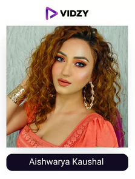
Aishwarya Kaushal
YouTube: Aishwarya Kaushal
USP:
She covers all the necessary topics to help you find everything you need at one place.
Indian fashion lover, YouTuber, and social media creator Aishwarya Kaushal Jain is highly renowned for her writing on fashion, beauty, and lifestyle topics as well as the popular videos she creates as one of the top Indian beauty vloggers.
The 102K+ subscribers to this Indian beauty creator’s YouTube channel like the fashion, beauty, challenges, entertaining, and fun videos she uploads there. On all of her social media platforms, she also has a considerable fan following.
She is renowned for her candid YouTube product reviews on skincare and cosmetics. In addition to receiving an unbiased review of each product, you will also learn how to use them to enhance your appearance. Aishwarya is the founder and CEO of karwaya and has appeared in SUGAR cosmetics.
-
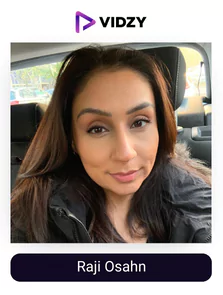
Raji Osahn
YouTube: Raji Osahn
USP:
She has in-depth knowledge of the field and knows how to make each of her content audience friendly.
An Indian YouTube beauty guru to watch out for is RajiOsahn. On her channel, she offers numerous tutorials and treatments for skin issues like pigmentation, dark undereye bags, and how to cover, hide, and fade scars.
Even for beginners, her tutorials and hacks are really approachable and simple to follow. She demonstrates some amazing techniques and tricks to replicate her immaculate base makeup. Her most popular videos are “Step by Step “Threading facial hair at home” and “Eyebrow Threading using only hands”. Our go-to Indian beauty YouTuber for newcomers and people with acne-prone skin is her.
Right from the quality of the videos to the value she adds, everything is top-notch and provides a whole experience for those who are tilted towards the beauty side. She has a following of 91.1k and a great engagement rate owing to her mission statement of being the voice of women who want to look beautiful and shine. Make sure you check out the content of one of the top Indian beauty youtubers!
To Sum Up
According to the Digital Marketing Institute, 86% of consumers turn to social media creators for recommendations and advice when making purchases. As a result, most brands intend to significantly increase their creator marketing budgets in 2024.
If you want to turn out as a winner, you need a professional team like that of Vidzy on your side to take care of each element from simple to complex.
So, what are you waiting for? Get in touch with them now!